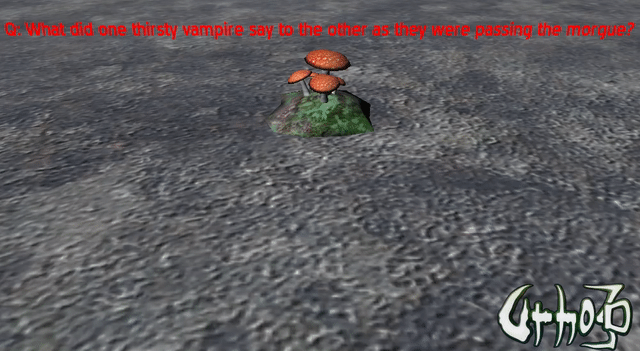

rku
I implemented cooperative multitasking for Urho3D. Simply put you can now write code like this:
void TasksSample::MushroomAI()
{
// Implement mushroom logic.
const char* mushroomText[] = {
"Q: Mummy, why do all the other kids call me a hairy werewolf?",
"A: Now stop talking about that and brush your face!",
"Q: What did one thirsty vampire say to the other as they were passing the morgue?",
"A: Let’s stop in for a cool one!",
"Q: How can you tell if a vampire has a horrible cold?",
"A: By his deep loud coffin!",
"Q: What do skeletons say before eating?",
"A: Bone Appetit!",
"Q: Why did the vampire get fired from the blood bank?",
"A: He was caught drinking on the job!",
"Q: What is a vampire’s pet peeve?",
"A: A Tourniquet!",
};
// This task runs as long as title node exists in a scene.
WeakPtr<Node> titleNode(scene_->GetChild("MushroomTitle", true));
for (;!titleNode.Expired();)
{
auto index = Random(0, SDL_arraysize(mushroomText) / 2);
auto text3D = titleNode->GetComponent<Text3D>();
// Mushroom says a joke question
text3D->SetText(mushroomText[index * 2]);
// And waits for 5 seconds. This does not block rendering.
SuspendTask(5.f);
// After 5 seconds mushroom tells an answer.
text3D->SetText(mushroomText[index * 2 + 1]);
SuspendTask(3.f);
// And after 3 more seconds laughs.
text3D->SetText("Hahahahaha!!!");
// Next joke comes after 3 seconds.
SuspendTask(3.f);
// SuspendTask() may be called without arguments. Execution will be resumed on the next frame.
SuspendTask();
}
}
void TasksSample::SubscribeToEvents()
{
// Create a task that will be scheduled each time E_UPDATE event is fired.
GetTasks()->Create(E_UPDATE, std::bind(&TasksSample::MushroomAI, this));
}
MushroomAI() code is written as if it executed sequentially and yet SuspendTask() calls do not block rendering even though code runs on the main thread. If you wish you may implement task scheduling on other threads as well. It is implemented in a cross-platform and efficient way. On windows it uses fiber API. On unixes it uses ucontext for first context switch and _setjmp/_longjmp for following context switches. No assembly code used.
Code:
Joke-telling npc mushroom from the sample:
